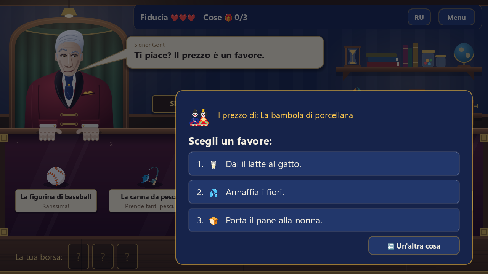
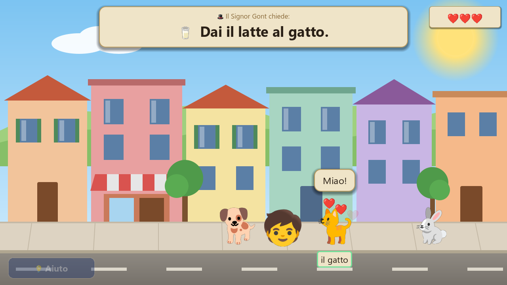
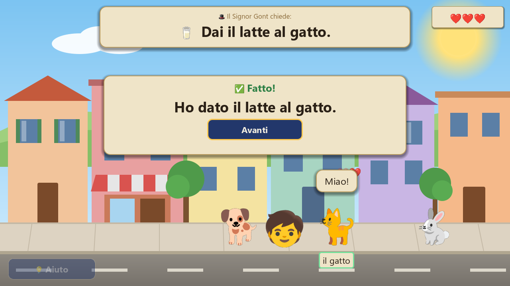
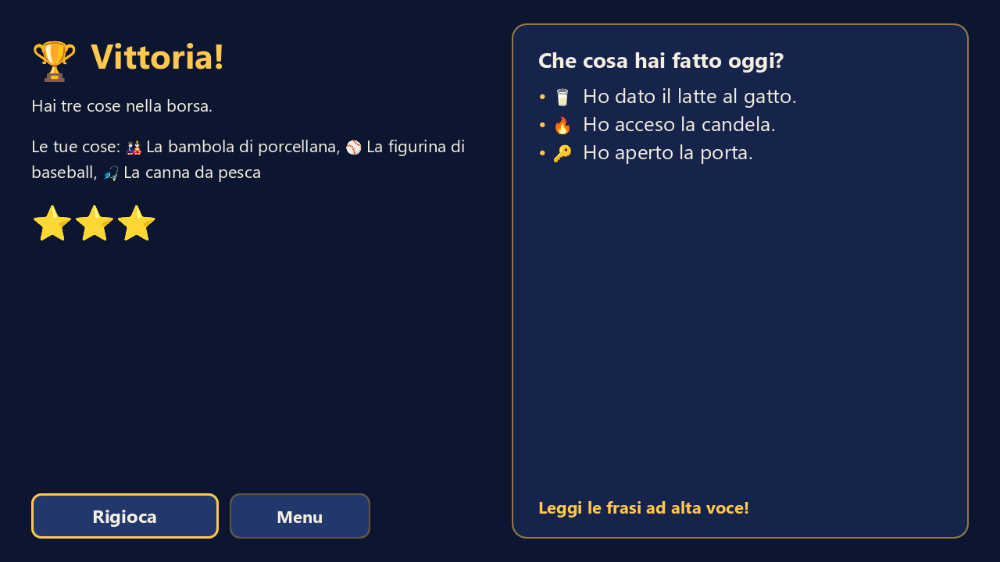
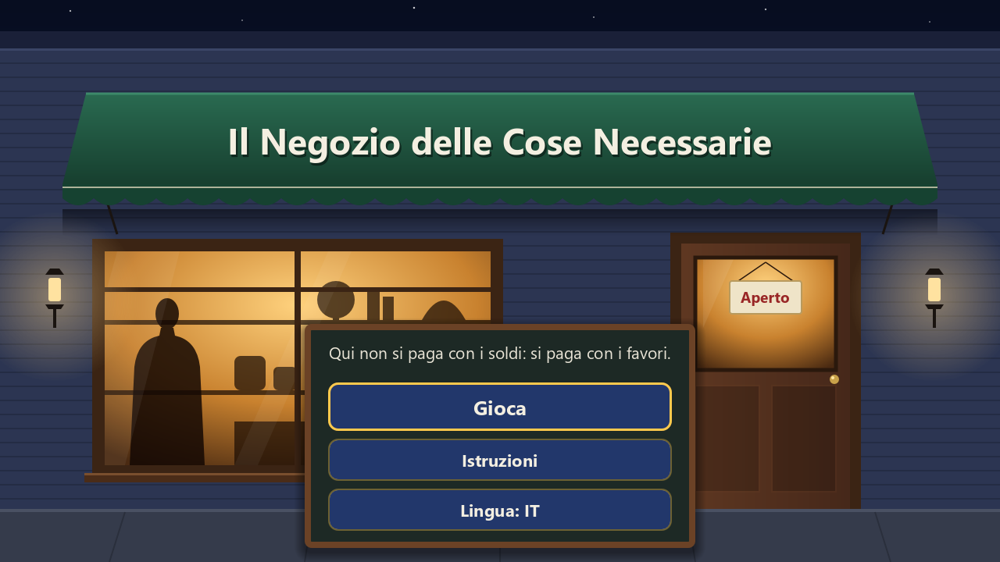

Итальянский язык
Il Negozio delle Cose Necessarie
Лавка из романа Стивена Кинга, где вещи покупают не за деньги, а за добрые дела на итальянском.
- Уровень A0–A1
- 8+
- Браузер

Об игре
В лавке синьора Гонта — вещи из романа Стивена Кинга «Нужные вещи»: бейсбольная карточка, удочка, фарфоровая кукла, щепка Ноева ковчега. Денег Гонт не берёт. В книге он требует злые шутки над соседями, а здесь — добрые дела: за каждую вещь он предлагает три на выбор, например «Dai il latte al gatto» или «Porta il pane alla nonna».
Дело делается в городе: прочитайте просьбу и нажмите на того, о ком она, — на кота, бабушку или свечу. Героиня подходит и отдаёт молоко, поливает цветы или открывает дверь, а на экране появляется сделанное в passato prossimo: «Ho dato il latte al gatto». Соберите три вещи — и вы победили.
Что внутри
- Для начинающих: короткие просьбы с картинками, правила понятны с первого хода
- 9 вещей из книги и 15 добрых дел: дать, отнести, полить, зажечь, открыть
- У каждого дела своя анимация: героиня идёт, отдаёт вещь, герой радуется
- Ошибка стоит одно из трёх сердечек, а кнопка «Aiuto» подписывает всех героев
- После каждого дела — фраза в passato prossimo; в финале все фразы, чтобы прочитать их вслух
- Перевод на русский — одной кнопкой, когда нужна подсказка
- Работает в браузере без установки, без рекламы и без сбора данных
Трейлер
Бесплатно на сайте — кадры из игры. Запуск открывается после оплаты доступа.




